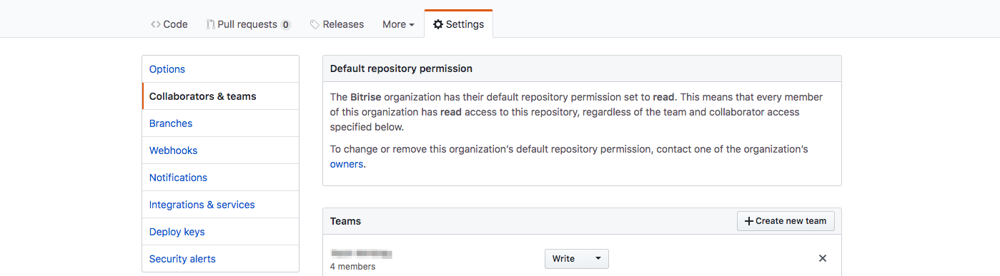
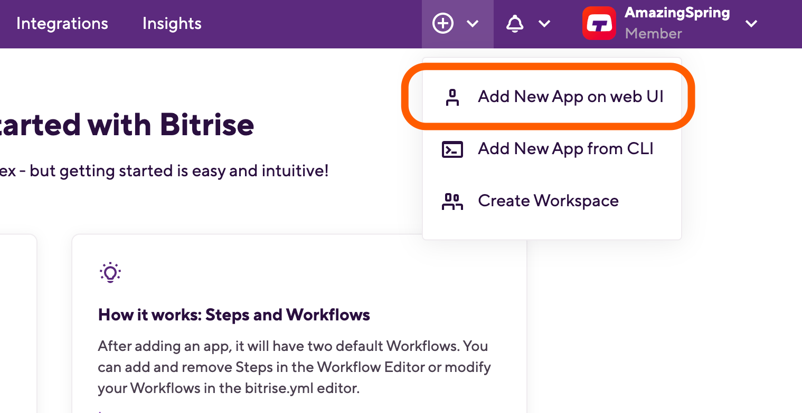
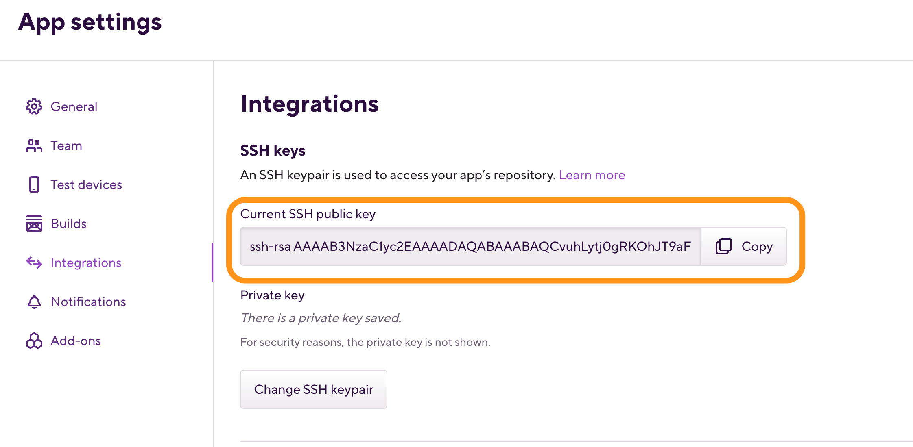
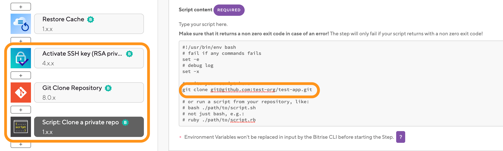

- Welcome to Bitrise documentation!
- Getting started
- Signing up for Bitrise
- Creating your first Workspace
- Adding a new app
- Webhooks and triggers
- Builds and Workflows
- Testing and deploying
- Migrating to Bitrise
- Signing up for Bitrise
- Creating your first Workspace
- Adding a new app
- Getting started with iOS apps
- Getting started with Android apps
- Getting started with React Native apps
- Getting started with Flutter apps
- Getting started with Ionic/Cordova apps
- Getting started with Expo apps
- Infrastructure
- Accounts
- Workspaces
- Apps
- Workflows and Pipelines
- Builds
- Code signing
- Testing
- iOS testing
- Android testing
- Flutter testing
- React Native testing
- Device testing with Firebase
- Test Reports
- Test Reports
- Exporting to Test Reports from any Step
- Running unit and UI tests for iOS apps
- Installing an .ipa file
- Registering test devices for iOS apps
- Device testing for iOS
- Running Android unit tests
- Device testing for Android
- Running tests in the Visual Studio App Center
- Running Detox tests on Bitrise
- Measuring your code coverage with Codecov
- Deploying
- Insights
- Bitrise CLI
- API
- References
- Getting started
- Bitrise Docs
Apps with submodules or private repo dependencies
Bitrise needs access to all repositories or submodules for a successful build, so if your app has submodules or private repo dependencies, you must grant Bitrise access to those as well.
If you have a project with one or more submodules or other private repository dependencies (for example, CocoaPods repositories), Bitrise needs access to all repositories or submodules for a successful build. Bitrise uses SSH to access Git repositories of private apps: to grant access, you need to make sure all the repositories can be accessed with the public SSH key generated for your Bitrise app.
App privacy
The scope of this guide mainly covers private Bitrise apps. The Git cloning submodules and repository dependencies section briefly covers how to access multiple repositories with a public app: the process is much simpler and all you need is to make sure that all repositories have an HTTPS git clone URL. You don’t need to worry about SSH keys with public apps, as they cannot have them.
There are two ways to achieve this:
Register the same SSH key for every repository you have to access during the build.
Register the SSH key with a bot user and add that user to all repositories.
Registering the same SSH key for every repository is the best, most secure way - but not all services support it. GitLab and Bitbucket does support it, GitHub, however, doesn’t. If your code is stored on GitHub, read on!
We’ll go through the other option, using a bot user or machine user - GitHub calls them machine users - in detail. In brief, the concept is simple: you register the Bitrise public SSH key to a user and add that user to all repositories that have to be accessed for your Bitrise build.
Machine user with read only access
It is not required to use a special bot/machine user: you can add the SSH key to your own account on the git hosting service. The best practice, however, is to use a machine user, with read only access, for those repositories you want to access during the build.
GitHub recommends this method for accessing multiple repositories. Let’s quickly go through an example.
We have a Bitrise app we’ll call MultiBit. It has a main repository and it needs to pull additional data from two other, private repositories during a Bitrise build. Our main user is called BitMan and his GitHub account is linked to his Bitrise account. To access the private repositories during the build, BitMan creates another user on GitHub, called BitBot. BitBot will be the machine user.
Now, BitMan accesses the App Settings page of his Bitrise app, and copies the public SSH key from the Current SSH public key field. BitMan then adds the SSH key to the BitBot user on GitHub and adds BitBot to the two private repositories as a collaborator. Now BitBot has the Bitrise public key and has access to the private repositories as necessary. It’s time to test if BitMan’s setup works.
BitMan goes to Bitrise and opens the Workflow Editor. He has the Activate SSH Key Step in his repository so the SSH key will work. BitMan adds a Script Step to clone the private repositories - as the Git Clone Step only works with the main repository! Once all that is done, the build should work as expected.
Using a machine user to access private repositories
A machine or bot user is a GitHub user that is not used by humans, instead it is exclusively used for automation. This is the best way to access a private repository: you create a machine user, add a public SSH key to the user, and then provide the user read access to the repository.
Adding the machine user to your repository
Create a new GitHub user account, one that will serve as the machine user.
Go to your repository on GitHub and select the Settings tab.
On the left side menu, select Collaborators & teams.
Scroll down to the Collaborators window.
In the search input field, search for the username of your newly created account.
Click Add Collaborator.
Change the user permission to Read.
By default, the invited collaborator’s permission is Write. You can keep it that way, of course, but a Read permission is enough for Bitrise.
Adding the SSH key to the machine user
In order for Bitrise to be able to use the machine user to access your repository, you must add the same SSH key to the machine user and the app on Bitrise.
When adding a new app
Start the process of adding your app on Bitrise.
When prompted to setup repository access, you can choose either Automatic or Add own SSH:
If you choose Add own SSH, you can generate your own SSH keypair. Provide the generated SSH key for the app and add the public key to your GitHub machine user.
If you choose Automatic, click I need to when asked if you need to use an additional private repository. Copy the SSH public key to your GitHub machine user.
Finish the process.
When your app already exists
Open your app on Bitrise with a user that has the Admin role on the app.
On the main page of the app, click on the App Settings icon:
 .
.
On the left, select Integrations from the menu options.
Copy the SSH key from the Current SSH public key field.

Git cloning submodules and repository dependencies
You have two options when it comes to accessing multiple repositories during a Bitrise build:
Cloning all the repositories on the virtual machine, and accessing them as needed.
Adding the additional repositories as submodules to your main repository.
In the latter case, you do not need to worry about cloning them: if you set up SSH access correctly, the Git Clone Step will take care of everything.
If you don’t want to or can’t add your repository dependencies as submodules, read on: we’ll talk about how to clone them.
Public vs private apps
There is one important detail to keep in mind when you want to give access to all submodules or private repository dependencies for an app: the app’s privacy settings determine what git URL should you use.
If you have a private app: use SSH URLs everywhere! Most services support SSH key based authentication only for SSH URLs (for example,
git@github.com:bitrise-io/bitrise.git). Therefore every private repository you want to use have to be addressed with the SSH URL. If you have direct private git repo references in your CocoaPods Podfile, you’ll have to use the SSH URL there as well. The same applies for submodules and every other private git repository URL you want to use with the SSH key you register on bitrise.io.If you have a public app: use HTTPS URLs everywhere! SSH URLs require SSH keys even if the repository is public. For security reasons, public apps CANNOT have SSH keys. As HTTPS git clone URLs do not require any authentication in the case of public repositories, they should be used for public Bitrise apps.
The Git Clone Step
The Git Clone Step only works with the main repository. If you need to access multiple private repositories, do not add multiple Git Clone Steps. Use Script Steps to clone those repositories on the Bitrise virtual machine.
To clone additional private repositories during the build:
Make sure you added a user with the Bitrise public SSH key to all the repositories.
Make sure you have the Activate SSH Key Step and the Git Clone Step at the start of your Workflow.
Add one or more Script Steps to clone the additional private repositories to the build.
Run a build.
Cloning issues
If you encounter issues with git cloning - for example, not all submodules are cloned - try the following command after cloning:
git submodule update –recursive –remote –merge –force